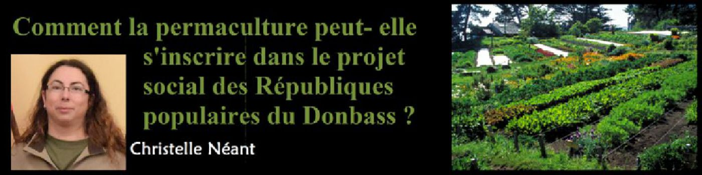
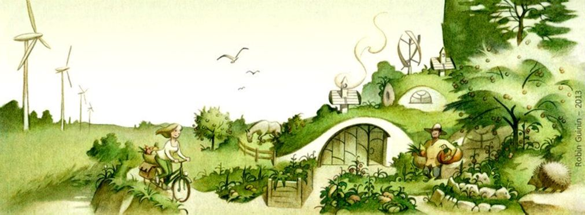
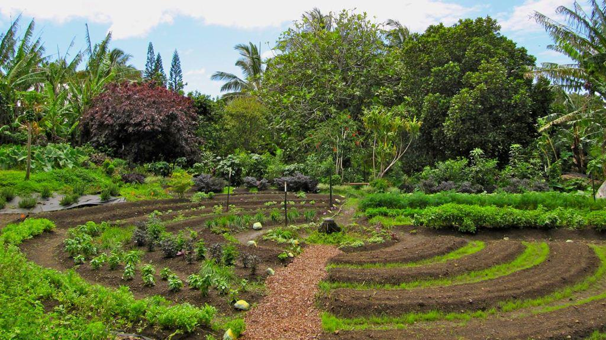
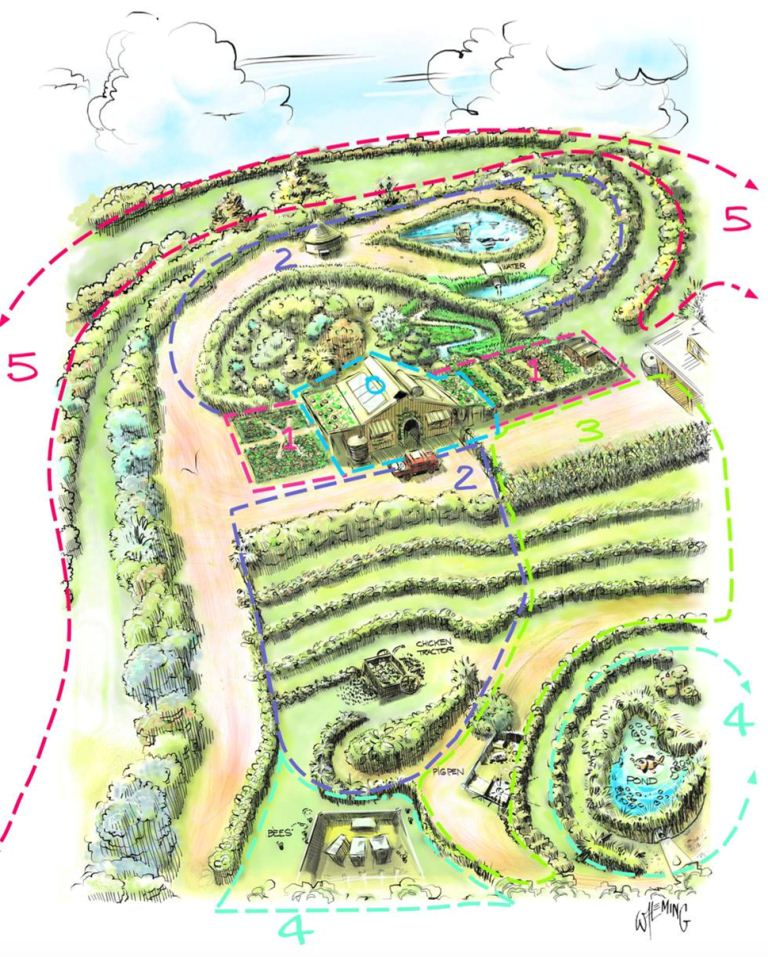
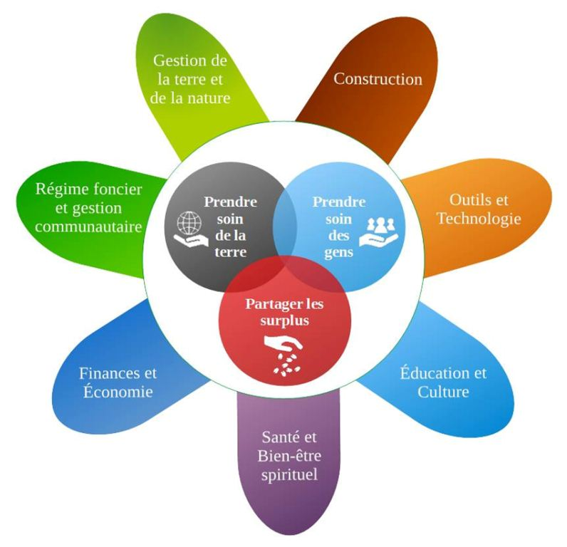
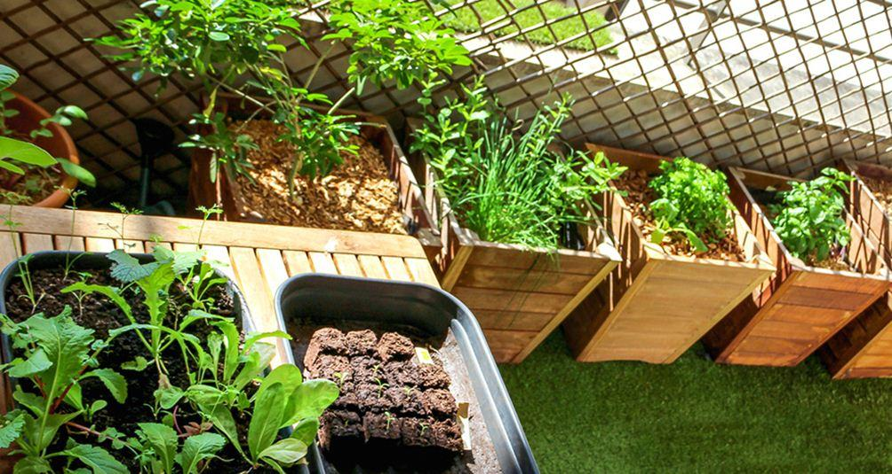
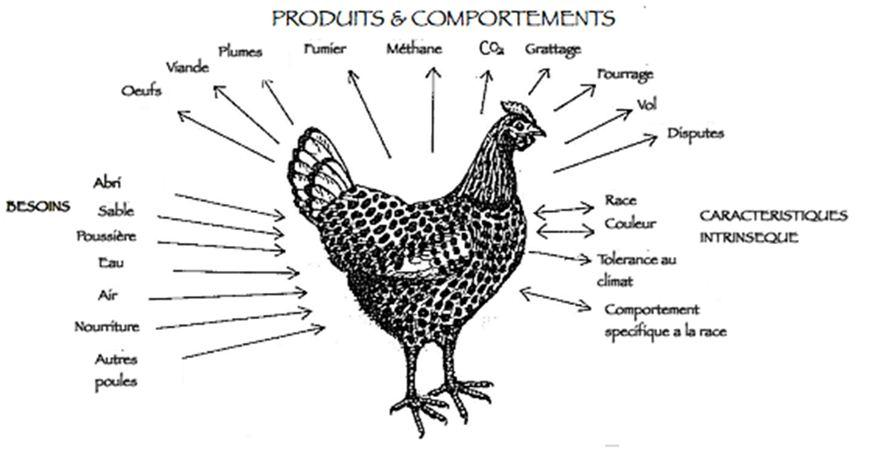
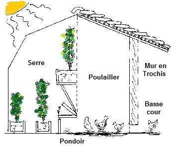

Comment la permaculture peut-elle s'inscrire dans le projet social des Républiques populaires du Donbass ?
par Christelle NÉANT

Avant de rentrer dans le vif du sujet, il nous faut tout d'abord définir ce qu'est la permaculture. La permaculture vient de la contraction de deux mots : « Permanent » et « Culture » (culture permanente en français). Ce mot et les concepts associés sont apparus en 1978. Il s'agit d'une méthode de conception de systèmes durables qui englobe un grand nombre d'aspects de notre vie quotidienne, allant de la production de nourriture, à la production d'énergie, en passant par la construction, l'éducation, l'économie, la gestion de la communauté (c'est-à-dire la vie politique), mais aussi la gestion de l'eau, des déchets, et la santé. Cette méthode peut s'appliquer à l'échelle d'une maison/ferme, mais aussi à l'échelle d'un village, d'une région, ou d'un pays.
La permaculture s'articule autour de trois principes éthiques simples :
1. Prendre soin de la terre (et de la nature par extension)
2. Prendre soin des gens
3. Partager les surplus
Tous les principes de la permaculture découlent de ces trois éthiques :
1. Observer et interagir
Avant tout il faut bien observer comment fonctionne le système que l'on veut modifier, qu'il s'agisse d'un jardin potager, d'un village, ou d'une région, il faut comprendre toutes les interactions pour être sûr de ne pas prendre une mauvaise décision, comme, par exemple, cultiver des plantes craignant le gel dans une zone où l'hiver est très froid.
2. Un élément assure plusieurs fonctions
Une haie coupe le vent, fournit de l'ombre bénéfique à d'autres plantes et peut aussi fournir des fruits consommables par les hommes ou les poules par exemple.
3. Une fonction doit être remplie par plusieurs éléments
Les besoins basiques : eau, nourriture, énergie, doivent être produit par deux ou plusieurs moyens, ainsi si un casse ou ne fonctionne plus un autre prend le relais.
4. Favoriser la diversité
En cultivant plusieurs plantes différentes côte à côte, par exemple, certaines fourniront de l'engrais naturel, d'autres peuvent chasser les nuisibles. Les systèmes diversifiés souffrent moins des maladies et des parasites que les systèmes où on ne cultive qu'une seule plante.
5. Recycler, stocker et optimiser l’énergie
En construisant une habitation ayant besoin de peu d'énergie pour être chauffée et éclairée, en réutilisant la chaleur du système permettant de cuisiner pour chauffer l'eau servant à la toilette, en recyclant les déchets de cuisine pour faire du compost etc.
6. Privilégier les petits systèmes intensifs
Par exemple, en travaillant sur de petites surfaces ne nécessitant pas de machine et donc consommant moins d'énergie, on utilise des systèmes de production d'énergie renouvelable à l'échelle de la maison ou de l'immeuble, plus efficaces que les gros systèmes.
7. Aller dans le sens de la nature et non contre elle
Aller contre la nature consomme beaucoup d'énergie, il vaut donc mieux aller au maximum dans son sens, pour économiser l'énergie. Par exemple, au lieu d'empêcher les plantes d'un terrain d'évoluer naturellement vers le stade forêt (qui est plus stable et procure beaucoup d'avantages pour les cultures et les élevages) on va au contraire planter des arbres pour accélérer ce processus. Ou dans le domaine éducatif, utiliser la curiosité naturelle des enfants pour les pousser à s'intéresser aux différentes matières scolaires.
8. Utiliser les ressources biologiques
Par exemple, utiliser des canards pour lutter contre les limaces, ou les poules pour débarrasser les moutons de leurs parasites.
9. Placer les différents éléments en fonction des autres, et faire en sorte que les déchets ou productions des uns correspondent aux besoins des autres
Par exemple, en couplant une serre au poulailler, et un champ de céréales à côté, les poules aèrent le sol du champ en le grattant, fournissent de l'engrais avec leurs fientes, et produisent de la chaleur la nuit pour la serre, la serre chauffe le poulailler de jour, et produit des légumes dont les restes alimenteront le compost qui ira dans le champ comme engrais, dont les céréales nourriront les poules.
10. Utiliser et valoriser l’effet de bordure
Par exemple, en cultivant entre une mare et une forêt, la zone de bordure bénéficie du microclimat, de l'hydratation et de la lumière fournie par l'eau et de la matière organique et de l'abri offert par la forêt, profitant des avantages des deux zones qui sont en contact, ce qui permet de produire plus.
11. Planifier l’efficacité énergétique
Par exemple, éviter de mettre le poulailler loin de la maison alors qu'on doit s'y rendre tous les jours, de manière générale faire en sorte d'avoir à fournir le moins d'efforts ou de dépenses énergétiques pour un maximum de résultat.
12. Avoir une attitude et un comportement « positifs »
Considérer que le problème est la solution, tout déchet est une ressource, etc. Par exemple, si on a un stock de vieux pneus (déchets), on peut les utiliser pour faire des tours où cultiver des pommes de terre. Si on en a beaucoup on peut même construire une maison avec.
Ces éthiques et ces principes sont universels et peuvent s'appliquer à presque tous les éléments de notre vie. Ensuite selon l'endroit, les ressources disponibles, le climat, le type de sol, etc, ces principes sont appliqués à des techniques d'agriculture, de production d'énergie, de construction etc qui varieront d'un endroit à un autre.
Le but de la permaculture est de créer des systèmes résilients, les plus autonomes possibles, et surtout avec un fonctionnement soutenable sur la durée. C'est-à-dire un système dont le fonctionnement et le développement sont réellement durables, en utilisant au maximum les ressources disponibles sur place.
Si on regarde à présent le Donbass et les Républiques populaires de Donetsk (RPD) et Lougansk (RPL), on voit clairement que la permaculture pourrait être un formidable outil leur permettant d'améliorer leur résilience et leur autonomie, aussi bien alimentaire, qu'énergétique, par exemple, avec peu de moyens. En effet, en privilégiant les ressources disponibles sur place, en favorisant le recyclage et l'optimisation énergétique, il suffirait de peu de moyens investis pour parvenir à un résultat tangible. La majeure partie travail à fournir et des moyens à investir se situent au départ, lors de la phase d'analyse, de conception puis de modification du lieu ou des systèmes (en économisant au maximum les matières premières et les moyens financiers nécessaires). Ensuite les systèmes sont justement conçus pour fonctionner avec le moins d'efforts/de moyens/de travail possible. Les deux républiques pourraient donc parfaitement, à peu de frais, se lancer dans un tel projet malgré la guerre et le blocus économique imposé par Kiev.
De plus les aspects hors agriculture, construction et gestion énergétique s'intègrent parfaitement dans le projet social de la RPD et de la RPL, puisque la permaculture a pour but d'assurer le bien-être des gens, la protection de l'environnement, une vraie démocratie participative (c'est-à-dire une gestion de la communauté assurée par le peuple pour le peuple), un système économique et financier viable qui ne soit pas destiné qu'à l'enrichissement de quelques uns aux dépends des autres, un système de soins accessibles à tous, un système éducatif de bonne qualité et accessible à tous, l'accès à la culture, etc.
En se lançant dans un tel projet, le Donbass pourrait non seulement améliorer son autonomie et sa résilience (qui sont indispensables en situation de guerre), mais aussi devenir un exemple grandeur nature prouvant qu'un autre système que celui qui nous a été imposé (le capitalisme débridé qui détruit tout, nations, hommes et nature, sur son passage) est possible. Les Républiques populaires ont déjà montré par leur révolte contre la junte de Kiev qu'un autre chemin que celui de la soumission au système établi était possible. Le développement d'un projet social, agricole, et énergétique basé sur la permaculture, ferait de nouveau des deux jeunes Républiques des pionnières montrant la voie à suivre pour les autres pays.
Partager cette page